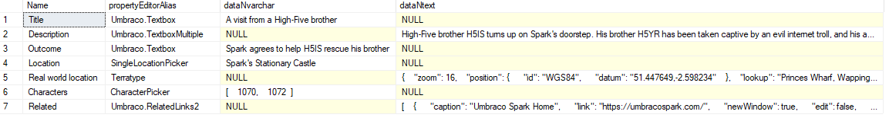

Awesome talk by Pete Duncanson about GraphQL and the community package
Shifts the parameter requirements from server side code to the front-end
Allows easy access to filtering, sorting, paging etc
Once Upon A Plan
Story planning website
Book
Chapter
Scene
Characters
Locations
Related links
What are we working with?
The GraphQL Query
Let's look at the Scene doctype
Scene stored data
Scene GraphQL Query
Resolving Related Links
[DefaultGraphQLValueResolver]
public class RelatedLinksValueResolver : GraphQLValueResolver
{
public override Type GetGraphQLType(PublishedPropertyType type)
{
return typeof(ListGraphType< RelatedLinksType >);
}
public override bool IsResolver(PublishedPropertyType type)
{
return type.PropertyEditorAlias == "Umbraco.RelatedLinks2";
}
}
Related Links Graph Type
public class RelatedLinksType : ObjectGraphType< RelatedLink >
{
public RelatedLinksType()
{
Name = "RelatedLinks2";
Field< NonNullGraphType< StringGraphType >>(
"title",
resolve: context => context.Source.Caption);
Field< NonNullGraphType< StringGraphType >>(
"link",
resolve: context => context.Source.IsInternal ?
context.Source.Content.UrlWithDomain() : context.Source.Link);
}
}
Outcome
Resolving Terratype

Terratype Resolver
[DefaultGraphQLValueResolver]
public class TerratypeModelResolver : GraphQLValueResolver
{
public override Type GetGraphQLType(PublishedPropertyType type)
{
return typeof(TerratypeModelType);
}
public override bool IsResolver(PublishedPropertyType type)
{
return type.PropertyEditorAlias == "Terratype";
}
}
Terratype Graph Type
public class TerratypeModelType : ObjectGraphType< Terratype.Models.Model >
{
public TerratypeModelType()
{
Name = "Terratype";
Field< NonNullGraphType< FloatGraphType >>(
"latitude",
resolve: context => context.Source.Position?.ToWgs84().Latitude ?? 0
);
Field< NonNullGraphType< FloatGraphType >>(
"longitude",
resolve: context => context.Source.Position?.ToWgs84().Longitude ?? 0
);
}
}
Terratype resolved
Resolving Characters
Custom Data Resolver
public override Type GetGraphQLType(PublishedPropertyType type)
{
return typeof(ListGraphType< PublishedContentInterfaceGraphType >);
}
public override object Resolve(PublishedPropertyType type, object value)
{
//this is where the actual work happens
}
public override bool IsResolver(PublishedPropertyType type)
{
return type.PropertyEditorAlias == "CharacterPicker";
}
Convert Ids >> IPublishedContent
var propertyValues = JsonConvert.DeserializeObject< int[] >(value.ToString());
if (propertyValues != null)
{
var umbracoHelper = new UmbracoHelper(UmbracoContext.Current);
var nodes = new List< IPublishedContent >();
foreach (var nodeId in propertyValues)
{
var node = umbracoHelper.TypedContent(nodeId);
if (node != null)
{
nodes.Add(node);
}
}
return nodes;
}